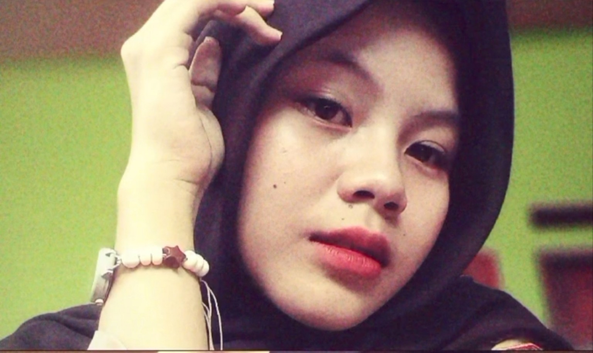
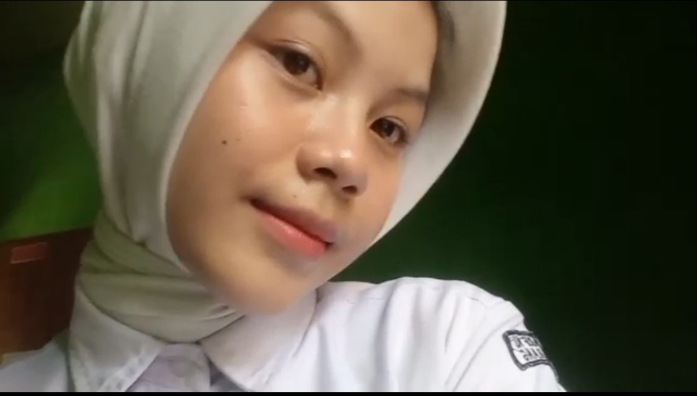
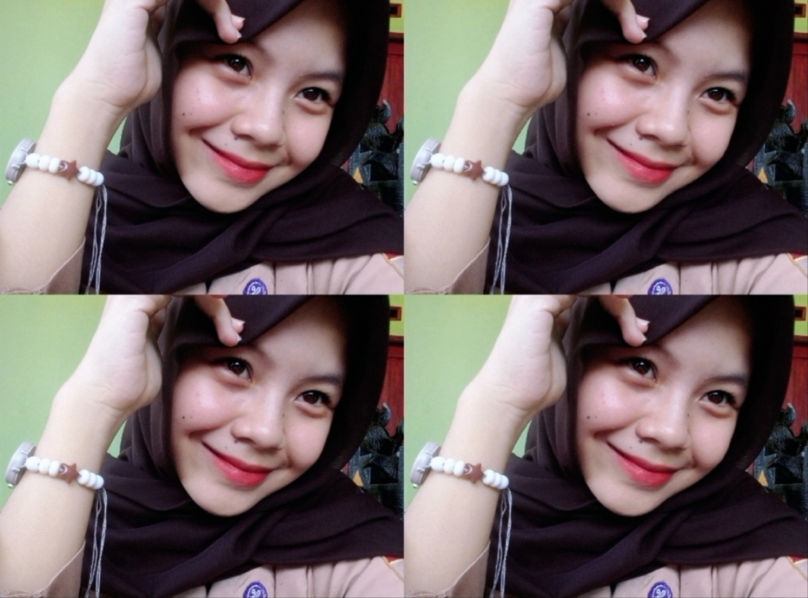

A quiet moment
FIG. 01 · SOFT ARCHIVE
A little universe, made just for you.
A little universe made just for you.

Made of photographs, small stories, and all the little things that make you who you are. Not a perfect universe—just one made with care.
A PERSONAL ARCHIVE · MADE WITH A LITTLE EXTRA HEART
Four little moments, kept like printed photographs in a well-loved journal.


Happy birthday. May this new year give you room to grow, rest when you need to, and try the things you have only imagined.
You do not have to have everything figured out. Moving slowly is still moving forward. May you be surrounded by sincere people, small joys, and the courage to stay true to yourself.
Consider this little website a pocket-sized reminder: you matter, your story matters, and there are still so many lovely pages waiting to be written.
Nggak harus selalu cepat. You are allowed to grow at your own pace.
May the year ahead bring quiet days, honest laughter, and places that feel like home.
Keep your wonder. There are still so many good things in this world waiting for you.
Each card holds a little wish. Tap one to open a tiny universe.
Dear Zian, if the world ever feels too loud, remember that you do not have to solve everything at once. Take a breath. Start with one small thing.
May this new year be less about becoming someone else and more about getting to know yourself. May you find courage without losing your softness, and joy in ordinary little things.
Thank you for being part of this world. This may be a small website, but the wish behind it is real: may life keep giving you reasons to smile.
With warmth, and a little blue ink.
Untuk Zian, dengan tulus. ✦
Take one little petal with you as you leave.
One little wish, saved in the archive.
Photo note